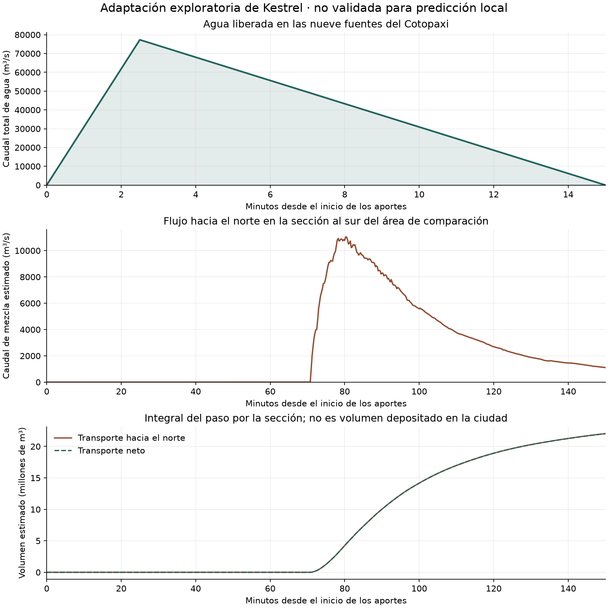
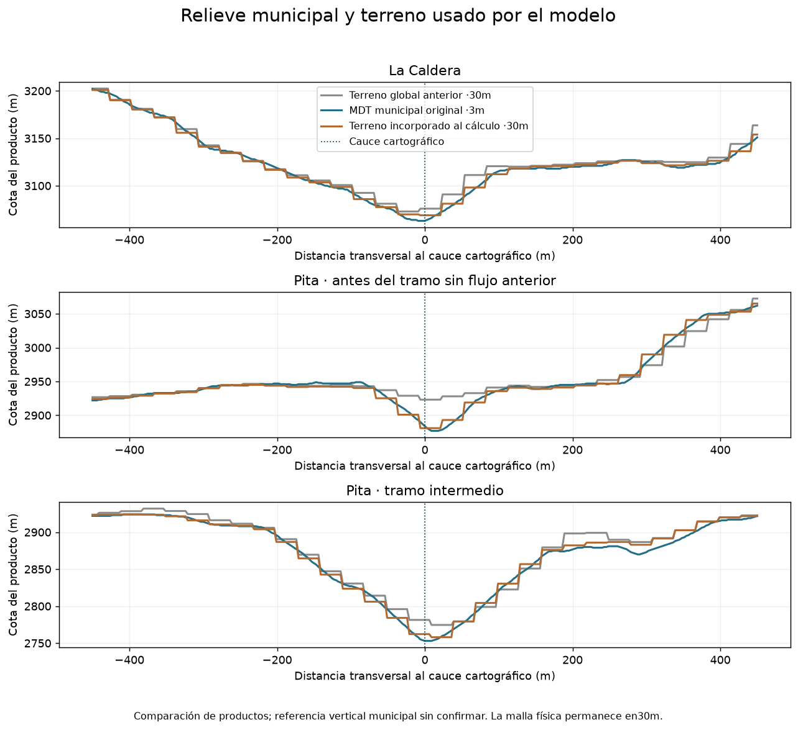
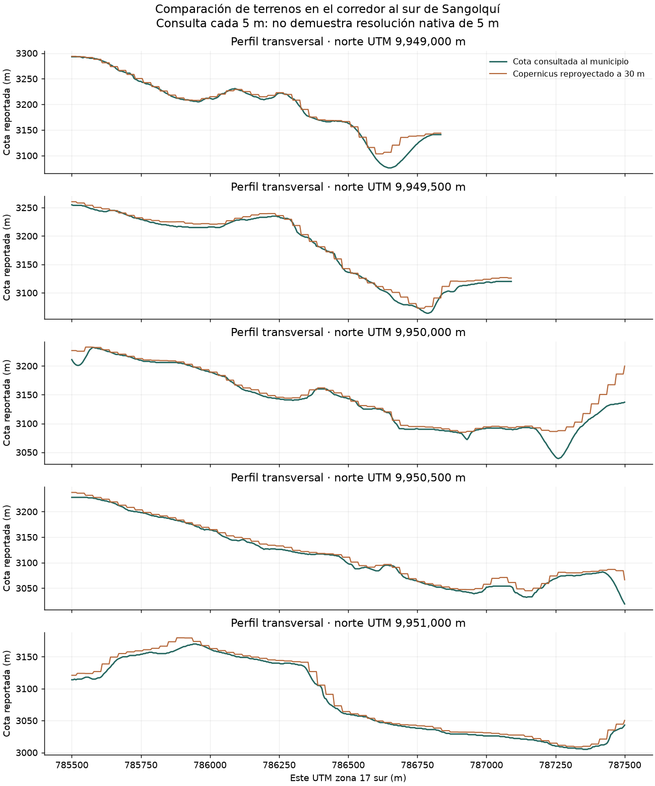

El cálculo presenta continuidad por los tramos revisados del Pita. Al menos el 95 % de la longitud ponderada muestreada de Pita2, Pita3 y Pita4 tiene flujo de al menos 5 cm dentro del corredor de comparación. Es una comprobación cartográfica del recorrido calculado, no una validación de las alturas o los tiempos reales. Ver recorrido comprobado · Datos del control.
Adaptación exploratoria, sin validación predictiva local. Usa los nueve aportes de agua de un estudio publicado, con ubicaciones digitalizadas de su mapa y MDT municipal nativo de3m remuestreado para una malla30m, con terreno regional fuera de su cobertura. No es un pronóstico de erupción ni indica cuánto tiempo hay para evacuar.
| Dato | Resultado de esta corrida |
|---|---|
| Agua liberada en el flanco norte | 34.789 millones de m³, durante 15 minutos |
| Primera presencia de al menos 5 cm en el rectángulo Sangolquí–San Rafael | Entre 70.75 y 71.00 minutos desde los aportes en el Cotopaxi. |
| Mayor espesor muestreado dentro de ese rectángulo | 32.67 m, normal a la pendiente |
| Mayor velocidad muestreada con espesor de al menos5cm | 87.29 km/h (24.25 m/s) |
| Transporte estimado hacia el norte por la sección de comparación | 22.045 millones de m³ |
| Transporte neto por esa sección | 22.028 millones de m³ |
La sección está al sur del rectángulo y abarca los corredores de Pita y Santa Clara. La integral del paso por una sección no equivale a todo el material que entra en la ciudad ni al que queda en sus calles. El transporte positivo puede contar material que cruza más de una vez. Los límites del rectángulo no son los límites administrativos.
El máximo de espesor muestreado está en la celda centrada en -0.36220, -78.40731, a los 85.75 minutos. Su componente vertical es 32.53m. Es una celda de30m dentro del rectángulo, que incluye cañones; no describe una altura uniforme sobre la ciudad ni necesariamente una calle.
Los máximos de esta tabla corresponden a los601 estados revisados cada15 segundos; puede haber picos entre esas muestras. Que un resultado sea cero o no alcance el área en esta corrida no demuestra que el lugar sea seguro.

La corrida terminó los 150 minutos y se revisaron sus 601 estados, guardados cada 15 segundos. La diferencia máxima en el balance de volumen del flujo y del lecho fue menor del 0,001 % del aporte. La integral por sección cambió 0.007195 millones de m³ al usar datos cada 30 segundos. Esta comparación examina el muestreo temporal; no mide el error del terreno ni valida la predicción.
El escenario mantiene los nueve hidrogramas de agua y los parámetros físicos de Vasconez y colaboradores2025. El MDT se descargó como GeoTIFF numérico mediante WCS del GAD Rumiñahui: capa identificada como2023, celdas nativas3m, cotas enteras de1m. Se remuestreó por interpolación bilineal a la malla física30m. La simulación no tiene resolución3m.
Dentro de su cobertura se utiliza el terreno municipal; fuera se conserva el terreno regional Copernicus y su acondicionamiento previo. En los500m próximos al límite se aplicó una transición ponderada, sin excavación del río ni corrección vertical supuesta. La referencia vertical municipal no está confirmada: la transición y el desplazamiento cero son supuestos con incertidumbre, no una nivelación. No se impusieron tiempos, velocidades ni alturas para completar el recorrido.
Las ubicaciones de fuentes siguen digitalizadas; la geometría glaciar procede del estudio, basada en2020–2022. No se actualizó el glaciar a2026. Otros escenarios RAMMS/ FLOW-3D utilizan entradas y relojes distintos; no se mezclaron sus tiempos con este cálculo.
Descarga, cobertura y hash del MDT · Integración y supuestos del terreno
Se muestrearon las líneas transversales con coordenadas de Torres y Vásquez, EPN2017, tablas3.5,3.7 y4.2. Las llegadas de nuestra corrida cuentan desde las nueve fuentes del glaciar. El otro estudio utiliza diferentes entradas, terreno y propiedades del flujo. Sus velocidades máximas de FLOW-3D no son necesariamente la misma magnitud que la velocidad promediada en profundidad de Kestrel; esta tabla aporta contexto y no constituye una calibración.
| Sección | Primera presencia ≥5cm en esta corrida | Máxima velocidad muestreada de esta corrida | Referencia EPN2017, escenario3 |
|---|---|---|---|
| La Caldera · Pita | 46.75–47.00 min | 14.19 m/s | 22 m/s |
| La Caldera · Santa Clara | 48.25–48.50 min | 7.49 m/s | 20 m/s |
| Sangolquí · El Ejido | Sin llegada ≥5cm en esta corrida | 0.00 m/s | 9 m/s |
| Hacienda Megamaxi · Pita | 102.00–102.25 min | 6.30 m/s | 10 m/s |
Estos tres perfiles comparan el terreno anterior, el MDT municipal nativo3m y el ráster30m usado por el nuevo solver. La línea del cauce es una referencia cartográfica; esta comparación no reemplaza secciones levantadas en campo.

Se obtuvieron 9.127 cotas numéricas válidas del MDT municipal. Sus diferencias frente al Copernicus varían según el lugar; el RMSE entre productos es de 10,30 m. No es una medida de precisión contra levantamientos de campo. Los perfiles muestran cauces que el terreno global suaviza. Esta revisión anterior comparó servicios y no representa una precisión de campo. La nueva corrida usa el GeoTIFF WCS descrito arriba, con transición y desplazamiento cero explícitamente inciertos. Consultar cada 5 m no convierte ese servicio en un MDT de resolución nativa de 5 m.

Comprobación del terreno municipal · Muestras de cota (CSV comprimido)
Se descargaron pequeñas muestras de nodos raíz Potree y se contrastaron puntos clase2 con el MDT3m, sin eliminar valores extremos ni aplicar desplazamientos. Las diferencias de cota entre productos son importantes: no se fusionaron los puntos al terreno físico ni se usaron para cambiar las alturas de edificios. La proyección de la nube no está declarada en sus metadatos. La interpretación UTM17S permite este diagnóstico de consistencia, pero no certifica su referencia horizontal o vertical.
| Nube | Puntos clase2 emparejados | Mediana LiDAR menos MDT |
|---|---|---|
| sangolqui | 907 | -28.55m |
| san_rafael_2024 | 836 | -29.11m |
| rumipamba_2024 | 6285 | -27.51m |
Las muestras son dispersas y no aleatorias; esta comparación no mide exactitud contra campo. Método, fuentes, hashes y diferencias completas.
También se revisaron 14 polígonos de depósitos y 170 puntos de trabajo de campo publicados por Andrade y colaboradores (2022), CC BY 4.0. Cubren el tramo cercano al volcán. Los depósitos de 1877 no son la misma magnitud que el espesor máximo de un flujo hipotético con otra geometría del glaciar. Esta comparación espacial no es una puntuación de exactitud ni valida llegadas o velocidades en la ciudad.

Descargar caudal por tiempo (CSV) · Datos y comprobaciones (JSON) · Entradas y terreno · Metodología completa
Las construcciones son referencias visuales; no actúan como obstáculos ni se calculan daños estructurales.